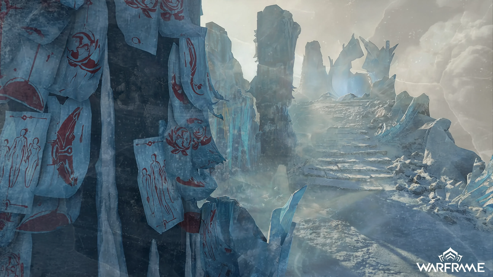
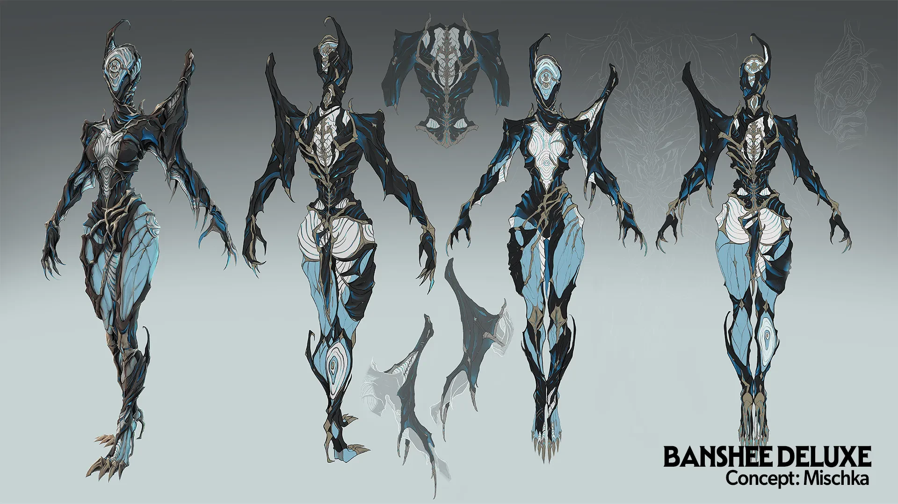
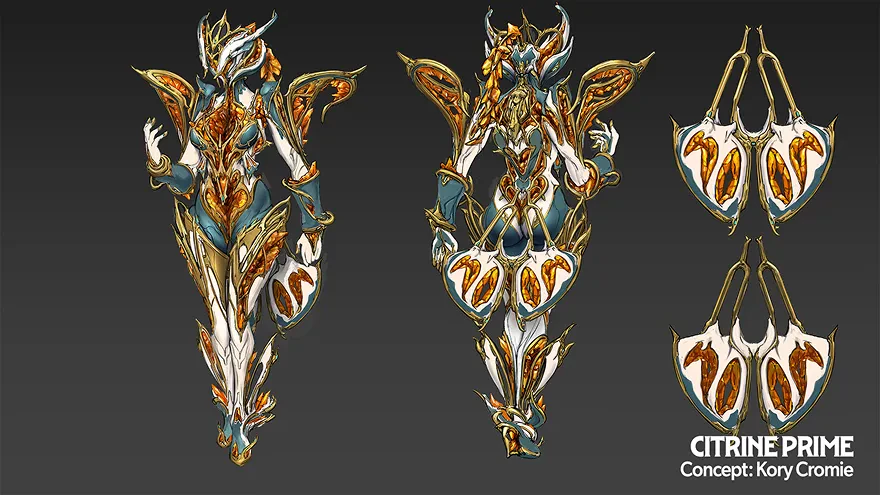
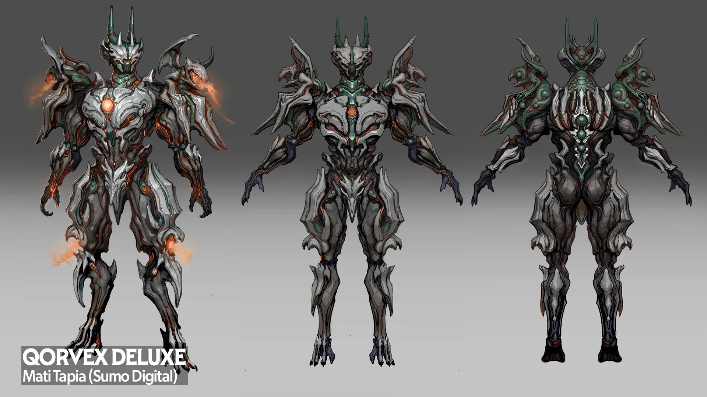

Retention Plan · Warframe: Iceblade of Narin · Digital Extremes
A rework wins in the loadout, not the patch notes
Pre-launch read. Written 16 July 2026 from the TennoCon 2026 reveal, before Iceblade of Narin shipped, and published on LinkedIn the same day (original post). Nothing here has been graded against the shipped update yet. When it is, the grade goes next to this page, not over it.

The call
What this is. A retention plan for Iceblade of Narin, the fall update that bridges TennoCon to Tau: a new ice frame, Citrine Prime, two Deluxe skins and a full Banshee rework.
What I did. Named the measurements that separate a rework players return to from one they try once and shelve, and the ones that separate a Prime Access sale from a Prime frame that actually gets played.
Why it matters. Bridge content is the least glamorous thing a live-service studio ships and often the best predictor of whether players are still around for the next big drop. Grade a re-release on whether an old frame re-enters the daily loadout, not on launch-week spikes.
Pillar 01 · Behavioural loop & telemetry
A rework proves out when a shelved frame re-enters loadouts
Patch-note applause will not show it. Reworks ship knowing they might be ignored: the studio is re-releasing an asset players already put down.
The loop being instrumented
Rework re-adoption
banshee_loadout_share_d14 vs pre_patch_baseline. Persistent re-adoption at D14, filtering out transient day-one curiosity.
Tried-once signature
banshee_mission_completed vs banshee_unequipped_after_1_mission. Flags the "tested it, shelved it again" outcome in week one.
Monetization-to-play
prime_acquisition_velocity vs prime_d7_utilization. Converts wallet spend and relic grind into actual loadout deployment. The sale is not the outcome.
New-frame depth
narin_first_build_saved. Adoption signal for Narin, the first female ice frame in over a decade.

Pillar 02 · Economic stabilisation & value capture
Citrine Prime carries the money; Banshee carries the goodwill
Sequence them so neither cannibalizes the other.
Premium faucet
Citrine Prime Access. Prime weapons, accessories and Operator / Drifter cosmetics. The fall beat's cash and Platinum anchor.
Cosmetic sinks
Qorvex Deluxe · Banshee Deluxe. Convert surplus without touching power.
Time-gate
Fall 2026 → Winter Tau. Stagger Prime Access and Nightwave so a sink stays live across the gap.
banshee_ability_usage vs meta_frame_baselines. The rework adds relevance without inflating a new must-run build that devalues the roster.


Pillar 03 · Tech / ops infrastructure
One clean rollback lane for the whole fall cluster
A shared-backend ability change can misfire game-wide. The risk lives in the balance regression, not the new model.
Shared-backend risk
Banshee's systemic rework touches the shared ability and mod backend. Validate reworked scaling server-side so it is not exploitable in high-level play.
Single rollback lane
Narin, Citrine Prime, two Deluxe skins and the Banshee rework ship together. Blue-green patching keeps one clean revert path.
Pre-launch checkpoint
The September Devstream is the named baseline moment to lock telemetry and balance targets before the fall drop.
Scaling
Provision against the typical event bump over the June Steam peak of 124,688, not the 157,162 July spike.
Fall to winter bridge
- TennoCon 202610 to 11 July
- September DevstreamBaseline lock, telemetry checkpoint
- Iceblade of NarinFall 2026
- The floor to hold
- Warframe: TauWinter 2026
124,688 (June 2026) and 157,162 (July 2026) are SteamCharts monthly peaks for Warframe.
Pillar 04 · The balanced strategic matrix
Confirm Banshee gets played, and that she does not become mandatory
Adoption and diversity pull against each other. Each needs a partner that catches it lying.
North star
banshee_loadout_share_d14. Reworked-frame adoption, as a share of the deployed roster.
Counter-metric
single_frame_pick_rate vs global_loadout_concentration_index. Meta-homogenization churn: players lapse when one frame flattens build variety.
Exploit surface
Reworked sound and crowd-control abilities as a possible AFK-farm or nuke-macro vector; progression runners chaining the Citrine Prime farm.
Bridge guardrail
The post-TennoCon retention floor, held through fall so the base does not drift before Tau lands.
Grade a re-release on whether an old frame re-enters the daily loadout without becoming the only mathematical answer to the meta.
TennoCon 2026 · Iceblade of Narin · Banshee rework
A rework wins in the loadout, not the patch notes.
Don't grade a re-release on launch-week spikes. Grade it on whether the frame is still in the loadout at D14.
Sources & method
- Event names are proposed instrumentation, not Digital Extremes telemetry. Every hook above is a recommended schema written from outside the studio.
- Update contents (Narin, Citrine Prime, Qorvex and Banshee Deluxe, the Banshee rework, the September Devstream checkpoint) are from DE's TennoCon 2026 presentation and its press coverage, as compiled in my post-event report.
- Concept art is Digital Extremes' published concept work, credited on each image, used here for commentary.
- Concurrency: SteamCharts, Warframe (app 230410).
- Timestamp: first published 16 July 2026 on LinkedIn, before Iceblade of Narin shipped.
Part of a TennoCon 2026 series. The winter read is Instrument the return, not the reveal. The measured teardown behind the series is The Venus Gate.